Близится Светлый праздник Пасхи, и так хочется порадовать родных и близких не только расписными яйцами, но и красивой выпечкой. Пасхальные фигурки из мастики – это оригинальные и интересные украшения для праздничных блюд. Милые желтенькие цыплятки и забавные зайчики удивят взрослых и особенно понравятся малышам.
Для чего подойдут украшения из мастики, и как правильно высушить готовые фигурки
В качестве украшения пасхальных сладостей в основном используется разноцветная кондитерская посыпка, которая успела уже надоесть. В то же время фигурки из мастики на Пасху – простой в изготовлении, оригинальный и неизбитый декор. Например, при помощи небольших цветочков можно украсить творожную пасху и куличи. А мастичные зверушки замечательно подойдут для украшения торта или создания праздничной композиции.
Если фигурка из мастики имеет большой размер, необходимо выделить время для сушки, поэтому лепить ее следует заранее. В идеале составные части должны сушиться отдельно, их следует накрыть салфеткой и оставить при комнатной температуре на двое суток в сухом месте. Из хорошо высохших частей можно сделать готовую фигуру.
Стоит помнить!
Не высушенные должным образом фигуры или их заготовки могут потечь, потерять форму или потрескаться.
Если времени на сушку не так много, процесс можно ускорить. Для этого можно:
- положить заготовки в открытый духовой шкаф на пять минут при температуре 80°С;
- подержать их под холодной воздушной струей фена, при этом не следует подносить его слишком близко к заготовкам;
- воспользоваться сахарной пудрой или крахмалом при изготовлении и раскатке деталей.
Как лепить кролика с морковкой из мастики
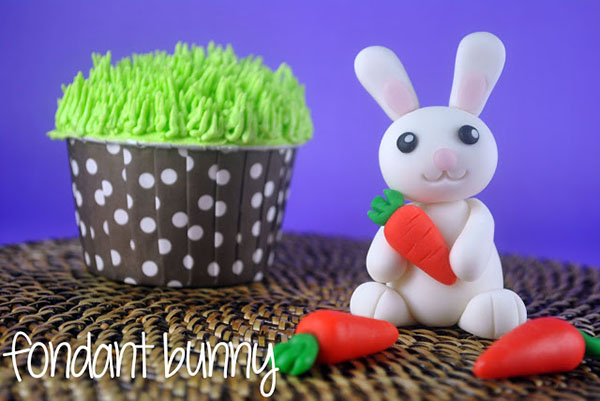
Для того чтобы сделать своими руками украшение в виде кролика с морковкой, понадобятся:
- Мастика. Ее можно сделать самостоятельно, используя пошаговые рецепты, а можно воспользоваться готовой массой. Для изготовления украшения понадобится сахарная паста различных цветов: белого, розового, черного, зеленого и оранжевого.
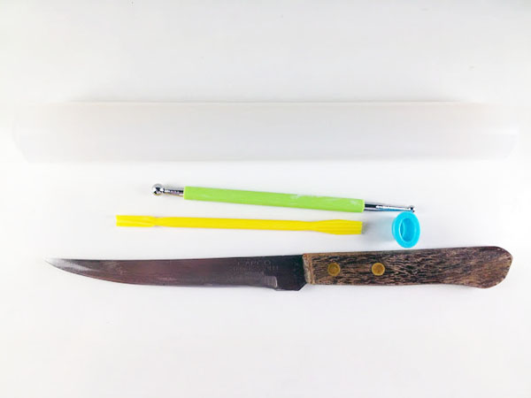
- Скалка и тонкий нож. С помощью этих инструментов легко отрезать и раскатывать из мастики пласт нужной толщины и размера.
- Стеки. Для работы с мастикой удобно брать различные стеки – специальные инструменты для работы с сахарной пастой. Они представляют собой небольшие палочки с различными наконечниками, при помощи которых очень просто лепить детали и прочерчивать фактуру фигурок. В случае их отсутствия не стоит огорчаться – можно воспользоваться подручными инструментами, например обычной зубочисткой.
Процесс лепки
Кролик из мастики с морковкой – составная фигурка. При этом морковь как отдельный элемент может быть самостоятельным украшением праздничных блюд. Процесс лепки можно разделить на две основные части.
Лепка кролика
Для того чтобы сделать украшение, нужно:
- Изготовить части фигурки.
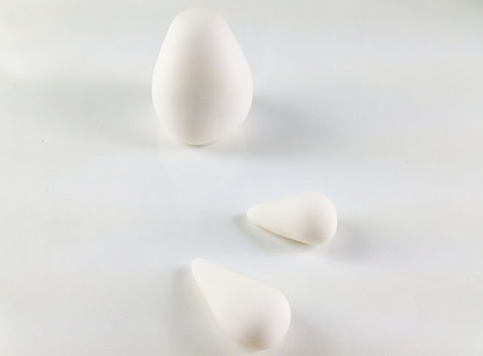
- Из мастики белого цвета скатать небольшое продолговатое туловище, по форме напоминающее яйцо.
- Заготовка для головы – немного сплюснутый шар.
- Передние лапы лепятся из небольших колбасок, которым придают каплеобразную форму.
- Задние лапы изготавливаются аналогично, но они менее длинные и более широкие.
- Небольшие длинные ушки – приплюснутые жгуты, имеющие с одной стороны плоский конец, а с другой – закругление.
- Хвостик – маленький белый шарик.
- Прорисовать детали.
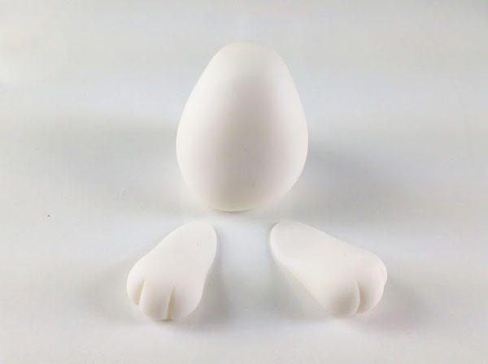
- При помощи зубочистки слегка продавить две борозды для трех пальцев на задних лапках.
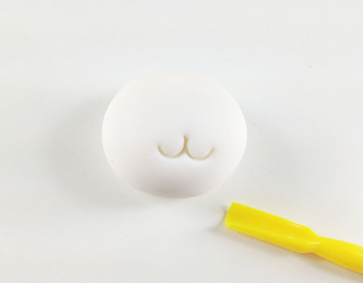
- Визуально отметить место, где будет находиться нос. В стороны ниже от него продавить два полукруга – ротик.
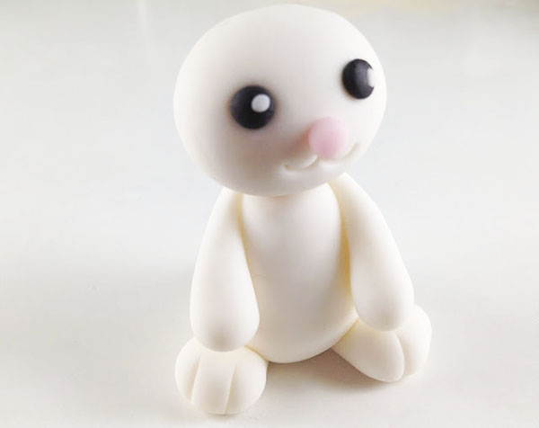
- В центре мордочки налепить нос – маленький приплюснутый шарик из розовой мастики.
- Прилепить маленькие глазки из черной мастики и сделать на них «блики» из белой массы.
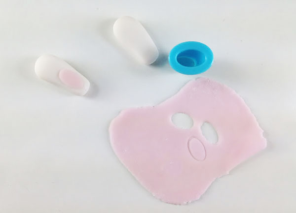
- Раскатать тонкий слой мастики розового цвета, и вырезав два небольших овала, налепить их на ушки.
- Собрать фигурку.
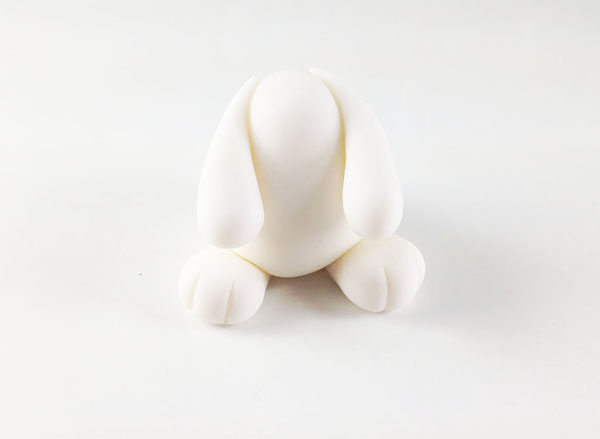
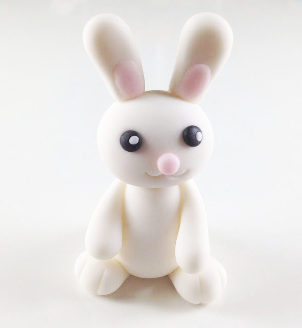
- Прикрепить к туловищу передние и задние лапки, затем присоединить голову с ушками и маленький хвостик.
Обратите внимание!
Прикрепить голову к туловищу, а уши – к голове можно, предварительно насадив их на зубочистку, – тогда они будут хорошо держаться. Остальные детали нужно приклеивать с помощью небольшого количества воды или яичного белка, смазывая кисточкой.
Лепка морковки
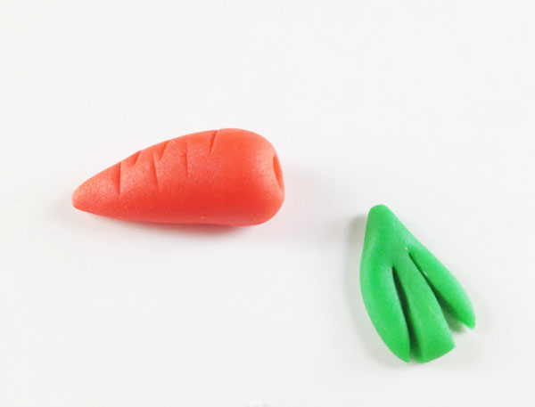
Морковка из мастики лепится довольно просто, для ее изготовления нужно скатать каплеобразную заготовку. Подойдет масса оранжевого или морковного цвета. Хвостик овоща делается из небольшого пласта зеленой мастики, который прорезается ножом для имитации ботвы.
Важно!
Чтобы морковка была более реалистичной, следует по всей ее поверхности при помощи зубочистки нанести горизонтальные риски.
Еще один способ лепки видно на видео:
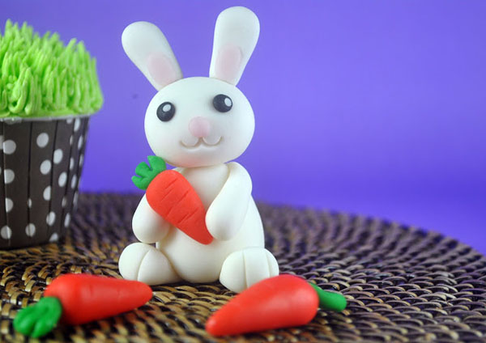
Когда морковка немного обсохнет, вложите ее в лапки кролику, приклеив с помощью воды или белка. Или же используйте как самостоятельное украшение.
На Тортопедии описаны и другие способы, как слепить зайца. Посмотрите, это очень просто!
Примеры оформления
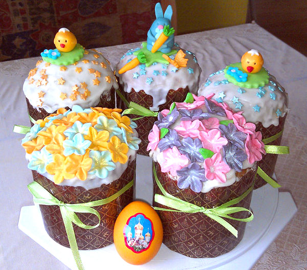
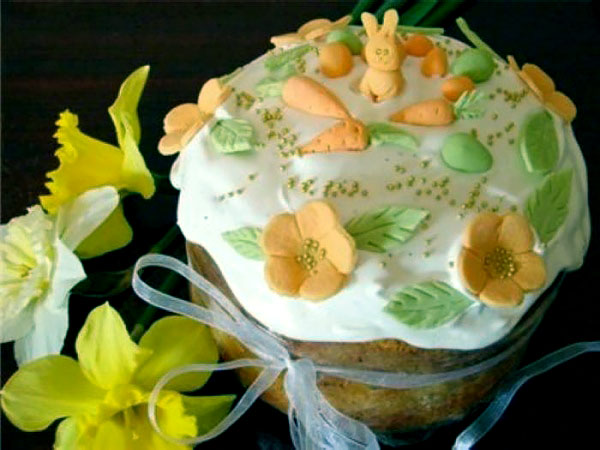
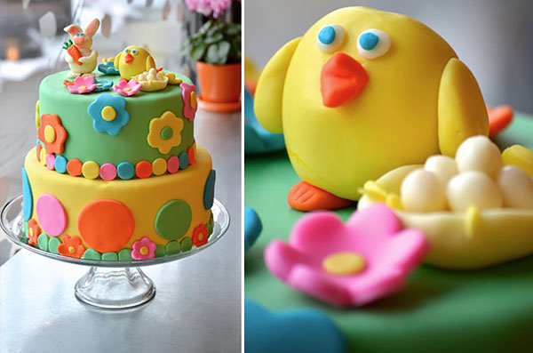
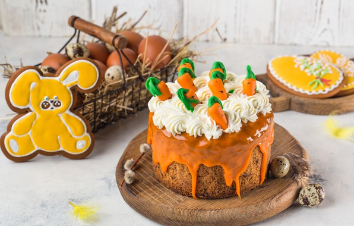
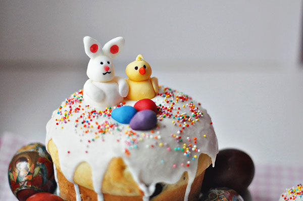
Как лепить маленькие цветы на Пасху из мастики
Для изготовления цветочков по мастер-классу понадобится:
- Мастика. Чем ярче цвет смеси, тем наряднее и красивее будет украшение. Можно приготовить мастику самостоятельно в домашних условиях.
- Скалка и нож. С помощью них удобно нарезать и раскатывать мастику.
- Специальные выемки или плунжера в виде маленьких цветов. О том, чем их заменить, читайте ниже.
- Стек с шаровым наконечником.
Процесс изготовления
Изготовить маленькие цветы из мастики нетрудно, особенно если под рукой есть необходимые инструменты.
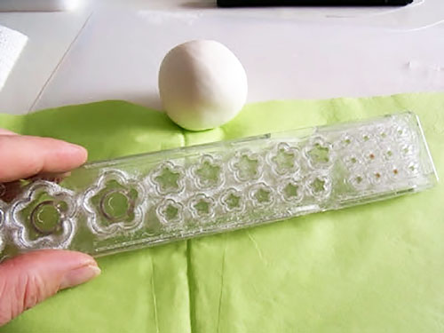
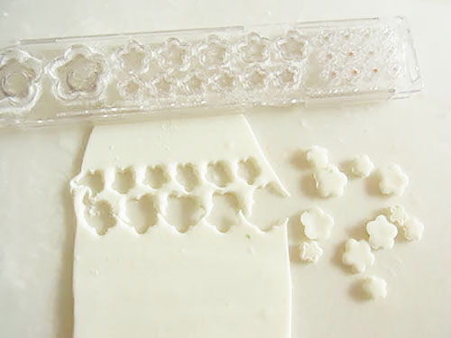
- Нужно раскатать пласт массы выбранного цвета.
- Вырезать маленькие цветочки при помощи выемок.
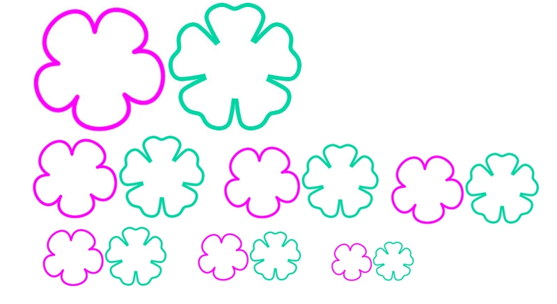
Совет!
Если у вас нет выемок, можно попробовать вырезать цветы руками при помощи ножа. Предварительно вырежьте из бумаги трафарет. Положите его на пласт мастики и обведите ножом.
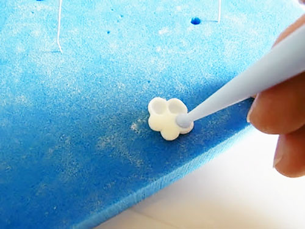
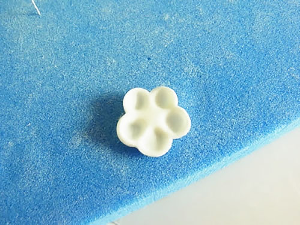
- Лепестки цветка следует продавить шариковым стеком соответствующего размера.
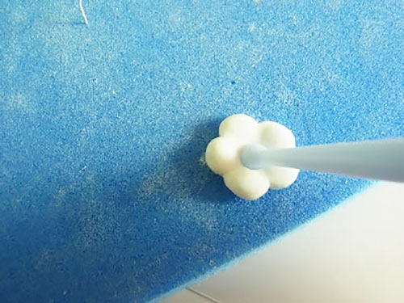
- Перевернуть заготовку на другую сторону и продавить сердцевину.
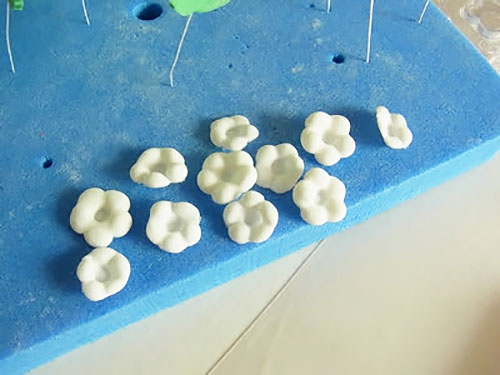
- Цветочки подсушить, а затем украсить куличи или пасху.
Процесс лепки на видео:
Примеры украшения
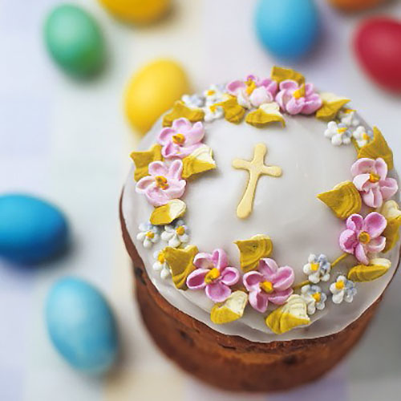
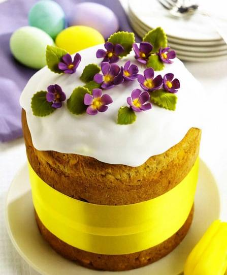
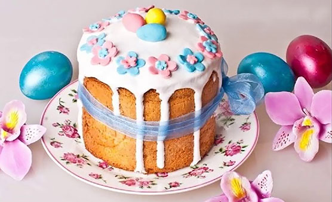
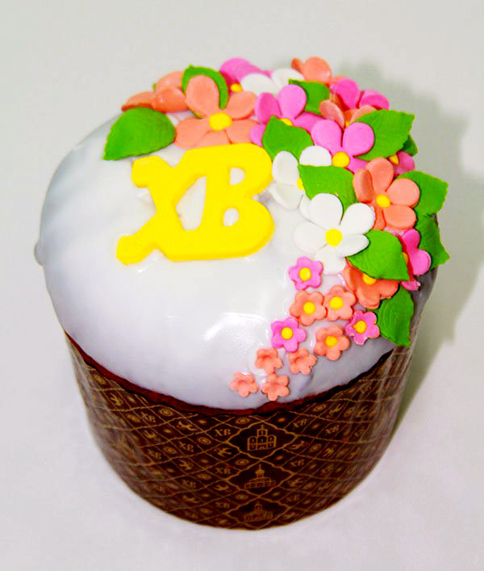
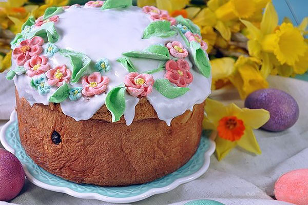
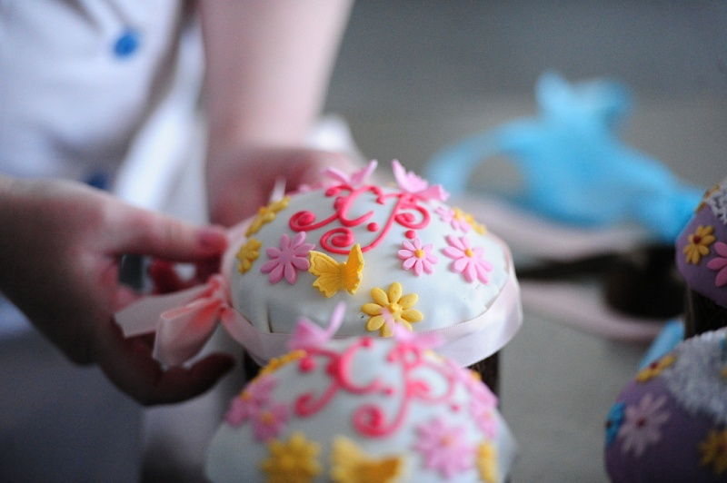
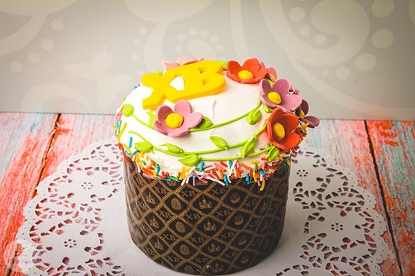
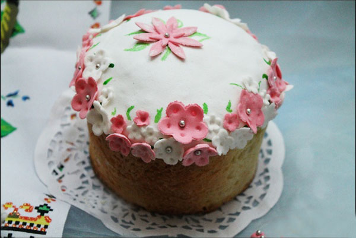
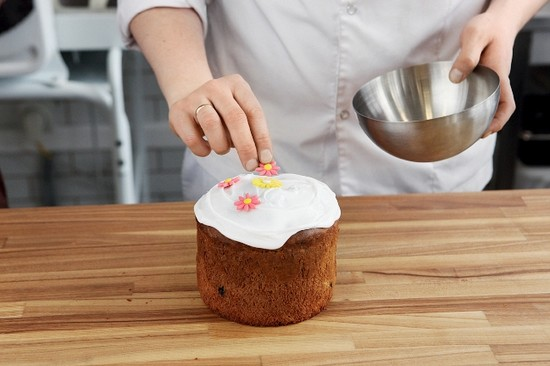
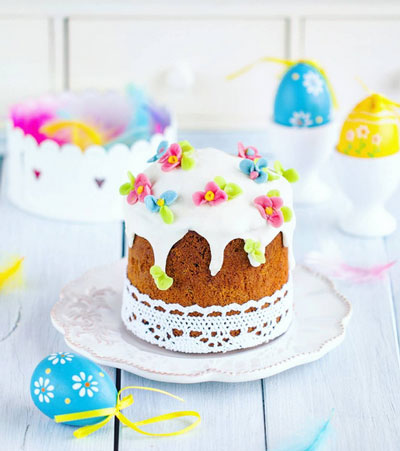
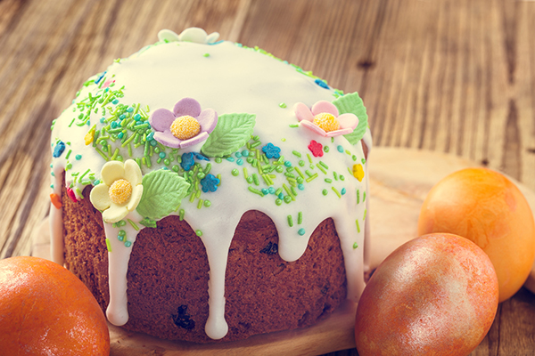
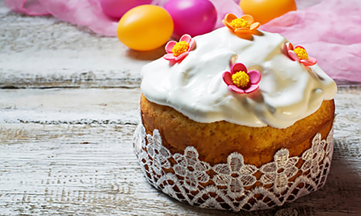
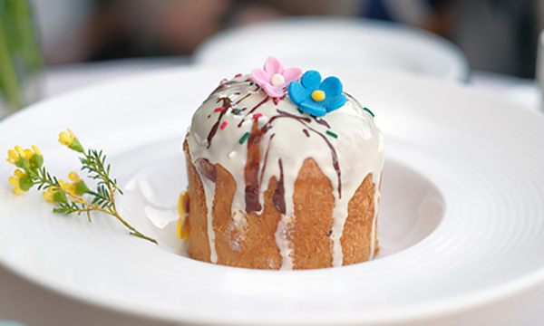
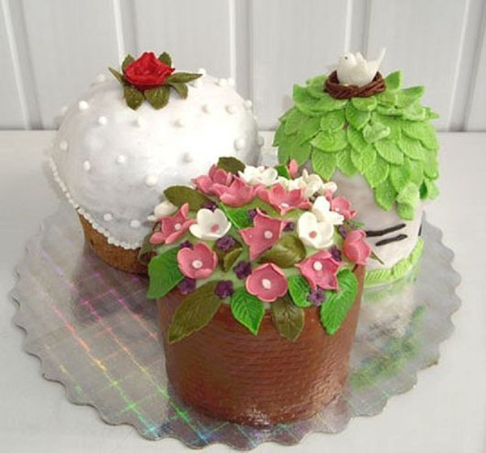
Как слепить пасхального цыпленка из мастики
Для того чтобы слепить фигурку цыпленка, вылупившегося из яйца, понадобятся:
- Мастика. Необходима масса желтого, белого, оранжевого цвета, а также немного розовой, фиолетовой и черной мастики для глазок и бантика.
- Скалка и тонкий острый нож для работы с массой.
- Стек с большим круглым наконечником.
- Зубочистка для вычерчивания фактуры и работы с тонкими деталями фигурки.
Процесс лепки
Цыпленок из мастики лепится за несколько этапов:

- Нарезать заготовки. Для изготовления украшения необходимо сделать:
- большой шар из белой мастики – из него будет лепиться яичная скорлупка, в которой сидит цыпленок;
- два шара из желтой мастики для туловища и головы цыпленка – они должны быть меньше по размеру, чем шар для скорлупы;
- два одинаковых, небольших овала для крыльев;
- тонкий маленький жгутик, из которого будет выполнен хохолок цыпленка;
- маленький треугольник со сглаженными краями для клюва из мастики оранжевого цвета;
- три маленьких шарика, два фиолетовых и один поменьше, розового цвета, для бантика.
- Слепить скорлупу.
- В белом шаре продавить середину так, чтобы получилась половина яйца. Это удобно сделать при помощи стека с большим круглым наконечником.
- Края яйца прорезать ножом, чтобы получились острые вершины, имитирующие разбитую скорлупу.
Полезно знать!
Если под рукой не оказалось стека с большим круглым наконечником, ничего страшного. Можно продавить заготовку пальцами, при этом следует хорошо сгладить оставшиеся отпечатки.
- Вылепить цыпленка.
- Один желтый шар поместить в готовую скорлупу – он будет туловищем.
- Другой желтый шар прикрепить на него сверху – он будет головой птички. Предварительно вставьте в туловище зубочистку, а на нее уже насадите голову.
- На голове при помощи зубочистки продавить два углубления для глаз и заполнить их мастикой черного цвета.
- Сделать по три точки на щечках цыпленка.
- Затем прикрепить оранжевую заготовку клюва и продавить зубочисткой две небольшие дырочки – ноздри.
- Две овальные заготовки немного сплющить, нанести на них зубочисткой три продольные полоски. Слегка согнув их вдоль оси, прикрепить к туловищу цыпленка, оперев на скорлупу.
- Вылепить детали.
- Нарезать тонкий жгутик на две или три небольшие части и, соединив их у основания, аккуратно прилепить к голове. Таким образом, у цыпленка должен получиться небольшой хохолок.
- Из трех маленьких шариков мастики лепим бантик. Серединка – розовый шарик, по краям банта – фиолетовые заготовки. При помощи зубочистки для большей реалистичности прорисовать складки на бантике.
Готовая фигурка цыпленка подойдет не только для украшения куличей. Ею можно украшать торты, капкейки и прочую выпечку.
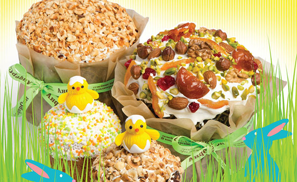
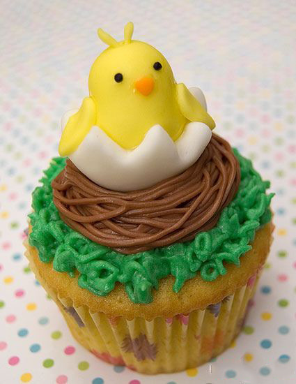
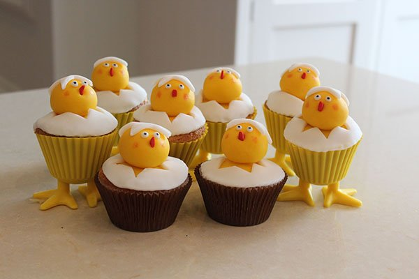
Альтернативный вариант лепки на видео: